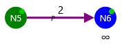
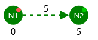

When edge is extracted from Q queue it turns yellow like this.

When edge is requested it turns purple like this.

When algorithm thinks the edge is out-pertinent it gets dashed like this.
When algorithm thinks the edge is in-pertinent it gets dot-dashed like this.